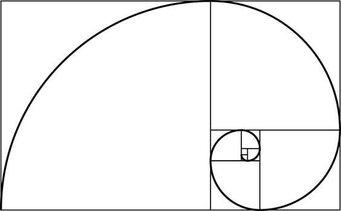

O QUE É PROPORÇÃO ÁUREA?
SubirMatematicamente falando, a proporção áurea é uma constante real algébrica irracional obtida quando dividimos uma reta em dois segmentos e seu valor é constituído por 1,6180339887... Quem gosta de pesquisar sobre a história da arquitetura, com certeza, já se surpreendeu com a monumentalidade e beleza de obras construídas na Grécia Antiga. O que muitas pessoas não sabem é que esses templos foram construídos com a ajuda da proporção áurea. Também conhecida como razão áurea e número de ouro, esse conceito matemático não para por aí. Ele também está presente no design, em elementos da natureza e até no corpo humano!
COMO A OBTEMOS?
SubirNós temos a proporção áurea quando dividimos uma reta em duas partes não iguais. Depois, pegamos o segmento mais longo dessa reta e a dividimos pelo segmento menor. Curiosamente, a sequência de Fibonacci está diretamente relacionada com a proporção áurea, já que a razão entre qualquer par de números sucessivos é bem próxima à proporção áurea. E, conforme os números vão ficando mais altos, a razão se torna cada vez mais próxima de 1,6180. A letra grega Phi — ou φ é usada para representar essa equação. Ela tem a ver com o arquiteto e matemático Phidias, que, segundo os estudiosos afirmam, foi quem empregou pela primeira vez o conceito da proporção áurea.
IMPORTÂNCIA
SubirÉ impossível explicar o que é a proporção áurea sem citar sua importância para a história da arquitetura e do design. Alguns estudiosos afirmam que ela foi utilizada na construção das Pirâmides do Egito, mas a proporção áurea foi usada “oficialmente” pela primeira vez na arquitetura na Grécia Antiga. A proporção áurea dominou o conceito de beleza na arquitetura durante muitos séculos. Na arquitetura medieval, ela está presente nas catedrais góticas de Notre Dame e de Chartres. A proporção áurea aparece desde a planta até a concepção das fachadas, passando pela espessura dos pilares.
A arquitetura Grega é marcada pelos templos de linhas retas, totalmente simétricas. Um dos mais famosos é o Templo de Parthenon. Além de utilizar a proporção áurea nas obras, os gregos também utilizavam a constante em esculturas. Referências:Viva decora
Mega Curioso
Subir